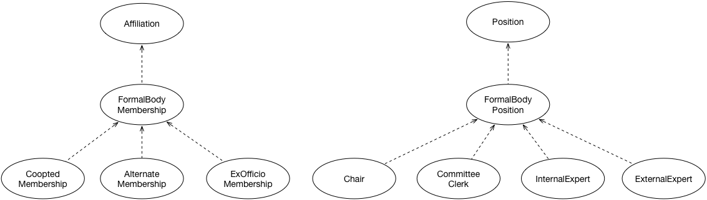

IRI: http://parliament.uk/ontologies/formal-body-affiliation/AlternateMembership
IRI: http://parliament.uk/ontologies/formal-body-affiliation/Chair
IRI: http://parliament.uk/ontologies/formal-body-affiliation/CooptedMembership
IRI: http://parliament.uk/ontologies/formal-body-affiliation/ExOfficioMembership
IRI: http://parliament.uk/ontologies/formal-body-affiliation/ExternalExpert
IRI: http://parliament.uk/ontologies/formal-body-affiliation/FormalBodyMembership
IRI: http://parliament.uk/ontologies/formal-body-affiliation/FormalBodyPosition
IRI: http://parliament.uk/ontologies/formal-body-affiliation/InternalExpert
IRI: http://parliament.uk/ontologies/formal-body-affiliation/PrincipalClerk
This HTML document was obtained by processing the OWL ontology source code through LODE, Live OWL Documentation Environment, developed by Silvio Peroni.